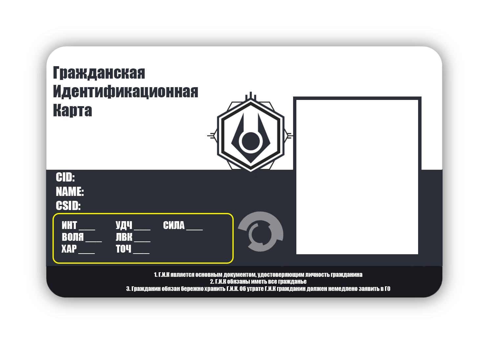

Как же создать персонажа?
Давайте для начала какие есть характеристики
Интеллект - ИНТ определяет насколько вы умны. Включает сообразительность, осведомленность, восприятие.
Сила воли - ВОЛЯ ваша решимость и способность противостоять опасности или стрессу. Она отражает также вашу смелось и способность переносить длительные решения.
Харизма - ХАР Ваша способность производить впечатление и оказывать влияние на людей благодаря своему характеру и харизме, насколько хорошо вы ладите с другими людьми, как вы взаимодействуете в социальных ситуациях.
Удача - УДЧ То, каким вас видит бог удачи. Имея достаточно высокий показатель Удачи, вы можете склонить вашу весов в свою пользу.
Ловкость - ЛВК Ваша общая физическая подготовка, прыжки, скачки, бой и другие спортивные упражнения.
Точность - ТОЧ Пожалуй достаточно важная характеристика в данной НРИ т.к определяет попадете вы в цель будто с оружия дальнего боя или с ближнего боя
Сила - Сила Так же выжная характеристика отвечающая в основном за то насколько сильный будет урон нанесен противнику. (Однако может использоватся и в случаях по типу поднять что-то тяжелое)
НАДО ПОМНИТЬ!
То что на карте ГИК в желтых рамках не видимо для внутре игровых персонажей и располаются данные там для удобства

Как же создать персонажа?
Для начала на каждую характеристику идет значение по умолчанию в 25 очков. Игроку же выдается на покупку характеристик так же 25 очков.
Стоимость повышения одной характеристики стоит... ОДНО ОЧКО что означает что максимум который можно достичь в начале игры на одну характеристику равняется 50
В течений НРИ можно получать очки для улучшения характеристик Подробнее тут
Для начала давайте определимся кто вы?
| Кто? | Описание | БОНУСЫ на выбор | АВТО МИНУСЫ |
|---|---|---|---|
| Дите Войны | Вы Дите 7 часовой войны у вас не было детства ваша только начавшаяся детская жизнь оборвалась с началом семи часовой войны когда по всему миру появились портальные шторма. Вы выросли в рабстве так как первый десяток лет Альянс не брезговал массово использовать детский труд на своих заводах. Вы выросли без семьи т.к они погибли в течений 7 часов или же уже в период правления альянса и вы по факту ни разу в жизни нормально не чувствовали вкус свободы ведь большую часть жизни вы были под гнетом альянса. На момент НРИ вам от 25 до 30 лет | +10 к Ловкости, +10 к Интелекту | -15 к Воле |
| Гражадин старого мира | бывший гражданин, прошедший Семичасовую войну. Эти семь часов навсегда врезались в подкорку, как шрам, который не заживает, а только ноет при смене погоды. Вы помните не грохот канонады и свист снарядов — нет, война была слишком стремительной и чудовищной для этого. Вы помните гул. Низкий, всепроникающий гул, от которого дрожали стёкла в окнах и сковородка на плите. Гул, который шёл отовсюду и сразу ниоткуда. Вы помните тишину после. Ту самую, седьмую, самую долгую тишину. Тишину поверженного мира. На момент НРИ вам от 35 до 50 лет | Нету | Нету |
| Военный | Вы бывший военный, прошедший Семичасовую войну. Эти слова всегда звучали в вашей голове, когда кто-то спрашивал о прошлом. Не звание, не часть, не награды. Просто — «прошедший Семичасовую». Семь часов. Для кого-то — рабочий день, для кого-то — долгое путешествие на поезде. Для вас — целая жизнь, уместившаяся в отрезок от рассвета до полудня. Жизнь, которую вы оставили там, в пылающих руинах городов. На момент НРИ вам от 35 до 50 лет | +20 к Точности, +20 к Ловкости, +10 к Интелекту, +10 к Силе | -10 к Воле |